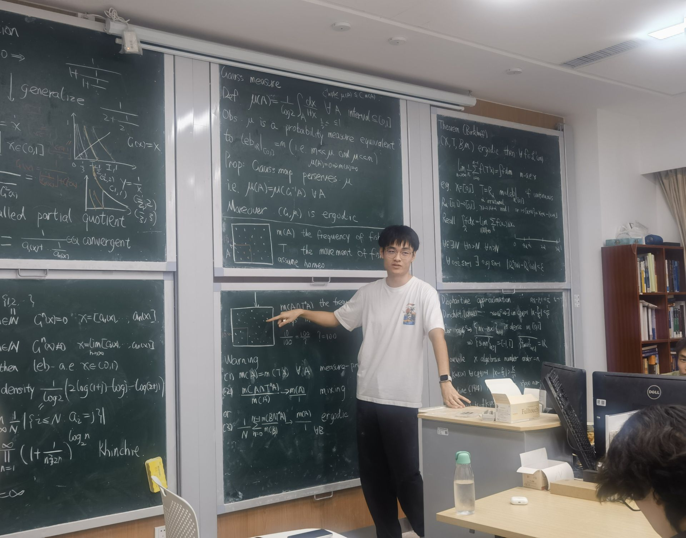
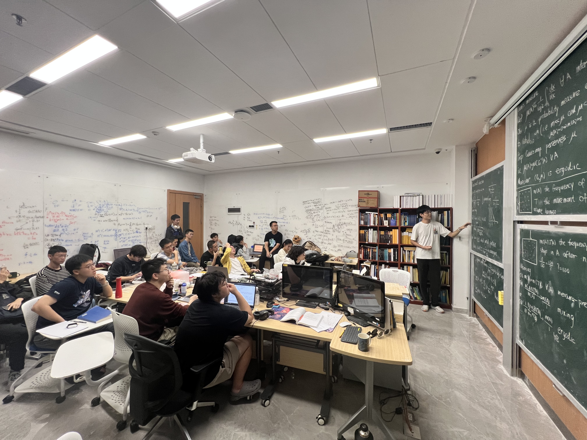

Abstract
对于几乎所有实数，其连分数展开的前 n 项部分商几何平均的极限值是一个固定常数，称为 Khintchine常数。 我们介绍连分数的基本性质和遍历性，以及遍历论中 Birkhoff 遍历定理和其在连分数中的应用。我们继续介绍 Diophantine 逼近与连分数作为最佳有理逼近的关系，引入并给出一些连分数测度理论的动机。




M.Sc. student in Mathematics
University of Bonn
Bonn, Germany
s79jxi@uni-bonn.de对于几乎所有实数，其连分数展开的前 n 项部分商几何平均的极限值是一个固定常数，称为 Khintchine常数。 我们介绍连分数的基本性质和遍历性，以及遍历论中 Birkhoff 遍历定理和其在连分数中的应用。我们继续介绍 Diophantine 逼近与连分数作为最佳有理逼近的关系，引入并给出一些连分数测度理论的动机。

